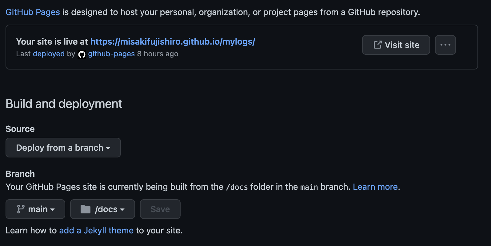

2. github Pagesとの連携¶
2.1. git リポジトリの作成¶
githubに登録して、リポジトリを作成する。
git pagesを公開するためには、作成するときにprivateではなくてpublicを設定する。
2.2. Sphinx の設定変更（出力先変更）¶
リポジトリをgit cloneして、sphinxのプロジェクトを作成。
git clone REPOSITORY_URL
githubPagesで公開するために、HTMLファイルの出力先をdocsフォルダに変更する。
docフォルダ作成
filesフォルダを作成（sphinxプロジェクトはこちらに移動）
Makefileを編集
SPHINXOPTS ?=
SPHINXBUILD ?= sphinx-build
SOURCEDIR = .
BUILDDIR = ../docs
# Put it first so that "make" without argument is like "make help".
help:
@$(SPHINXBUILD) -b help "$(SOURCEDIR)" "$(BUILDDIR)" $(SPHINXOPTS) $(O)
.PHONY: help Makefile
# Catch-all target: route all unknown targets to Sphinx using the new
# "make mode" option. $(O) is meant as a shortcut for $(SPHINXOPTS).
%: Makefile
@$(SPHINXBUILD) -b $@ "$(SOURCEDIR)" "$(BUILDDIR)" $(SPHINXOPTS) $(O)
htmlファイルの出力
以下を実行して、docフォルダ配下にindex.htmlなどが生成されることを確認
make html
2.3. github Pagesの設定¶
リポジトリ/Settiong/Pages
SourceでDeploy from branchを設定
Branchでmain/docsを設定

2.4. Tips¶
files配下に以下をsave.shとして保存しておくと、ファイル確認が簡単になる
sh save.sh
# make clean
make html
cd ../docs/
# git add .
# git status
# git commit -m "shellによるプッシュ"
# git push origin main
open index.html